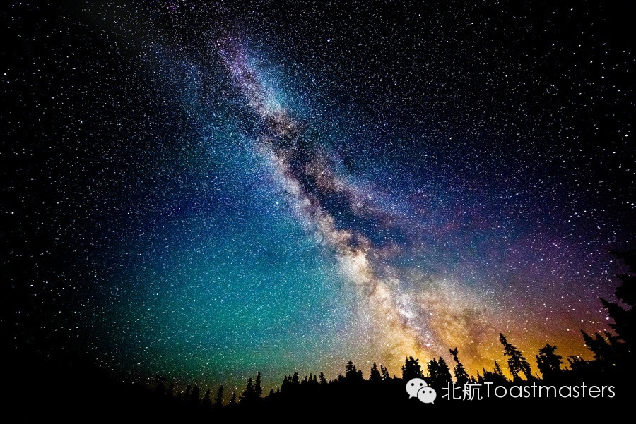
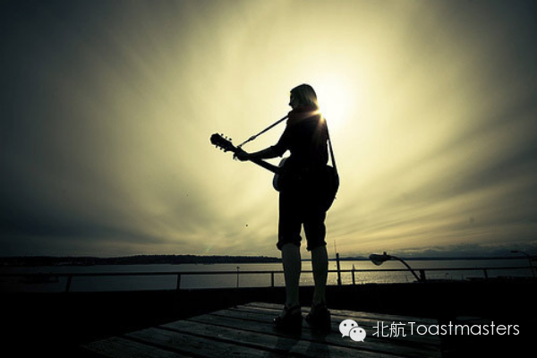

Travel
Time: 19:30-21:30, Friday, Oct. 24th
Venue: Room A209, New Main Building, Beihang University

Toastmaster: Junyar
Table Topic Master: Sophie
When life is in a mess, when the right time is coming, when we are eager to come across something new, I know all you need is a travel without delay! Travel can be a long journey combines fresh with nostalgic; it brings us fantastic sceneries, a unique experience, and a chance of self-examination. Travel also can be a good way to find out more about the people journeyed with. What is your opinion towards travel? Do you have indelible impression and unforgettable sight or special experience during your journey? Come on and share with us on Friday night!
Prepared Speech
Planetarium
CC1 Stan

As we known, Stan is a careful and gentle boy, he pays more attention to details. This time Stan will bring us his first speech to show us a romantic topic of starry sky! Meticulous as him, what will he shares with us? Let’s looking forward to Stan’s speech!
Prepared Speech
Unique
CC4 Jack

No one can deny that Jack is a funny guy, his novel ideas and witty words always bring us cheers and laughter. On Friday night he will share us his viewpoint of affection. Will he become a serious guy? We do not believe! Is there any heros in his story? We guess so! Let’s see what happened!
Map
Attention! Our meeting room changed BACK to Room A209, New Main Building, Beihang University (北航新主楼A209房间). And you can phone to Deron for help.
TEL: 180-0125-3933

https://mp.weixin.qq.com/s/tJpsJeCwjGaFXOEYZHNkng
本页为抢救式本地归档，图文已永久保存。